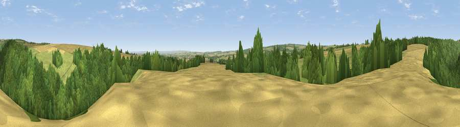

Viewpoint near Pockley
#18696 in England · top 43% of its area beats it · near PockleyWhere it is
The exact computed spot (SE 62325 85925). Click the marker for map links.
The view, rendered

A 360° render of this exact spot computed from the terrain model, tree cover and land cover — summer colours, afternoon light, calibrated against photographs of famous viewpoints. Real trees, hedges and buildings will differ in detail.
The panorama
Grey silhouette: terrain skyline in each direction (720 bearings, Earth curvature and refraction included). Dashed green: skyline with trees (+15 m) and buildings (+8 m) as obstacles. Blue strip: how far the ground is visible on each bearing.
Where the view opens
Wedge length = distance to the farthest visible ground on that bearing (vegetation-aware). Rings at 10, 25 and 50 km.
What fills the view
53% woodland · 27% grassland · 20% cropland
Angular shares of the visible panorama (visual magnitude), not map area. Landscape diversity 0.44 (0–1 Shannon).
Key numbers
More beautiful places nearby
The staircase of upgrades: each row has a higher view potential than everything closer. Driving times are estimates from straight-line distance, calibrated against real road routing — check an actual route before setting out.
| Place | Direction | Drive | Score |
|---|---|---|---|
| Viewpoint near Carlton | NNW · 4 km | ~9 min | 54.5 |
| Viewpoint near Carlton | N · 4 km | ~9 min | 57.9 |
| Viewpoint near Pockley | NNE · 5 km | ~10 min | 71.3 |
| Viewpoint near Carlton | N · 5 km | ~11 min | 71.6 |
| Viewpoint near Gillamoor | NE · 6 km | ~13 min | 72.8 |
| Viewpoint near Ampleforth | SSW · 7 km | ~15 min | 76.6 |
| Viewpoint near Boltby | W · 12 km | ~22 min | 79.6 |
| Viewpoint near Thirlby | W · 12 km | ~22 min | 81.5 |
54.26520, -1.04462 · source: screening · position refined by local search. Computed location — check access rights before visiting.